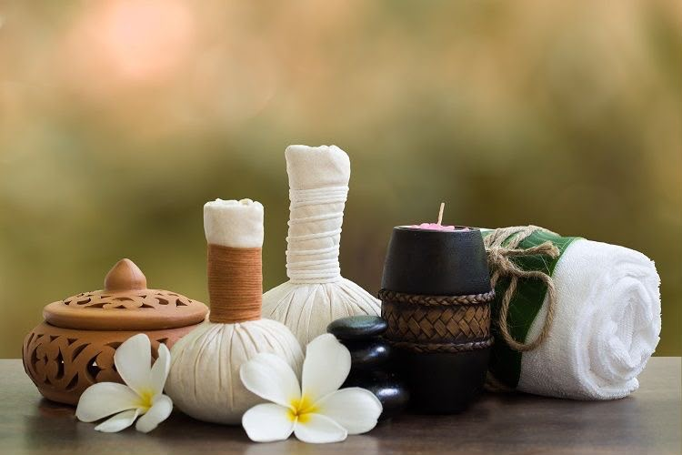
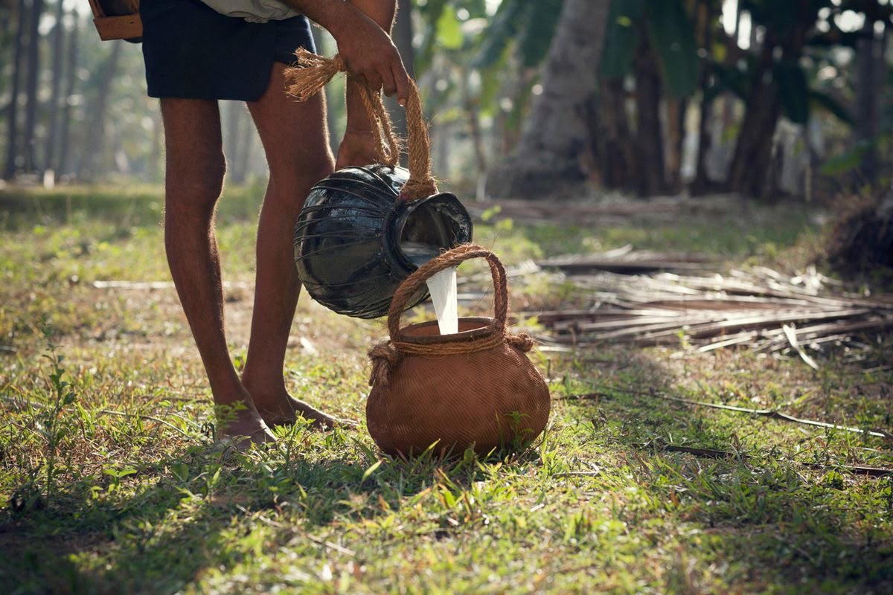
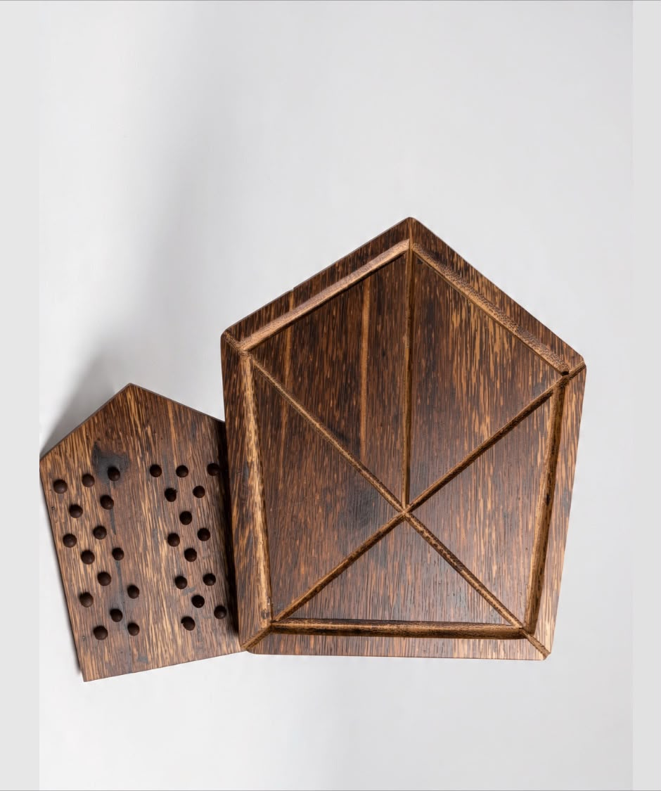
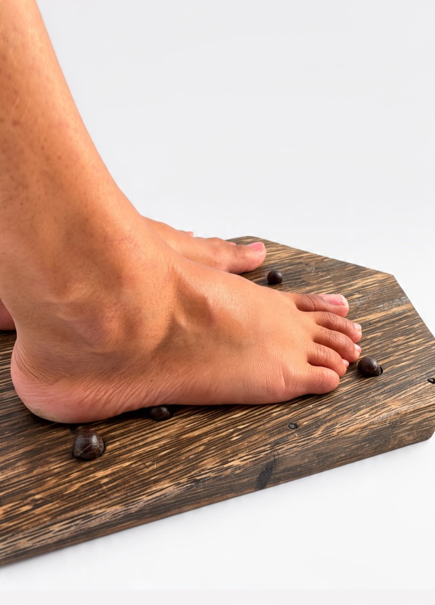
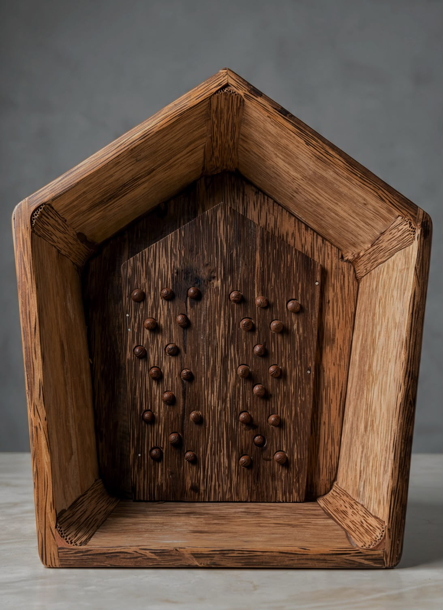

The Ancient Wisdom of Ayurvedic Foot Bathing
In Ayurveda, the feet are considered an important connection between the human body and Earth. A warm herbal foot immersion creates a peaceful transition into relaxation through warmth, aroma, natural ingredients, and wooden contact.
Benefits:
- Encourages relaxation after physical and mental fatigue
- Creates mindfulness and balance
- Provides grounding through natural materials
- Enhances sensory awareness

Kithul — The Secret Treasure of Sri Lanka
The Kithul palm (Caryota urens) has supported Sri Lankan communities for generations through food, craft, architecture, and traditional practices.
Kithul is valued because of:
- Slow growth and rarity
- Traditional knowledge passed through generations
- Connection between people and nature
- Skilled craftsmanship
The Sacred Connection with Kithul
Traditional Kithul climbers approach the tree with respect and gratitude. The tree is considered a living gift rather than simply a resource. This relationship represents harmony between humans and nature.
From Tree to Craft
Kithul provides:
- Sap for treacle and jaggery
- Leaves for traditional uses
- Seeds for sensory applications
- Wood for durable handcrafted products
Crafting process:
- Selecting mature wood
- Timber preparation
- Natural drying
- Traditional shaping
- Sanding and refinement
- Final polishing
Characteristics of Kithul Wood
- Deep natural colour with a luxurious appearance
- Unique grain patterns
- Strong and durable structure
- Traditional cultural value
- Warm tactile experience

Introducing Pancha Bhutha Avagaha
A handcrafted Kithul wood foot ritual vessel combining Ayurveda, Sri Lankan heritage, craftsmanship, and human-centred design.
Avagaha Meaning
Avagaha represents immersion or bathing. It symbolises entering a moment of cleansing, relaxation, and renewal.
Pancha Bhutha Philosophy
- Earth — Kithul wood, strength, and grounding.
- Water — Herbal foot immersion and purification.
- Fire — Warmth, light, and transformation.
- Air — Aroma, breath, and movement.
- Space — Silence, reflection, and awareness.
Design and Ergonomics
The five-sided form represents the five elements while supporting user comfort.
Features:
- Comfortable foot placement
- Smooth rounded edges
- Safe interaction
- Easy handling
- Natural connection with wood
Kithul Seed Massage Experience
The integrated Kithul seed massage area creates a tactile connection with another part of the tree. It provides gentle stimulation and encourages mindful interaction.
The Ritual Journey
Experience the profound tranquility of Sri Lanka's heritage. This seven-step ritual is crafted specifically to guide foreign visitors through a sensory journey, connecting mind and body to the ancient elements of nature in a deeply restorative practice.
Step 1: Preparing the Space
Creating a peaceful environment with herbs and aromas.

Step 2: Awaking the healing waters
Preparing warm water with natural ingredients.

Step 3: Sealing the ritual
Creating a private ritual space.

Step 4: Lighting the element of fire
Awakening warmth and energy.

Step 5: Awaking the five elements
Connecting with Kithul wood and water.

Step 6: Moment of inner stillness
Experiencing calmness and balance.

Step 7: Gratitude Return
A final moment of grounding and gratitude to conclude the journey.

Why Experience Pancha Bhutha Avagaha?
Because Sri Lanka is not only a place to visit — it is a story to feel.
Experience:
- A rare Sri Lankan heritage material
- Ayurvedic wellness traditions
- Local artisan craftsmanship
- Connection with nature
- A unique cultural wellness journey


